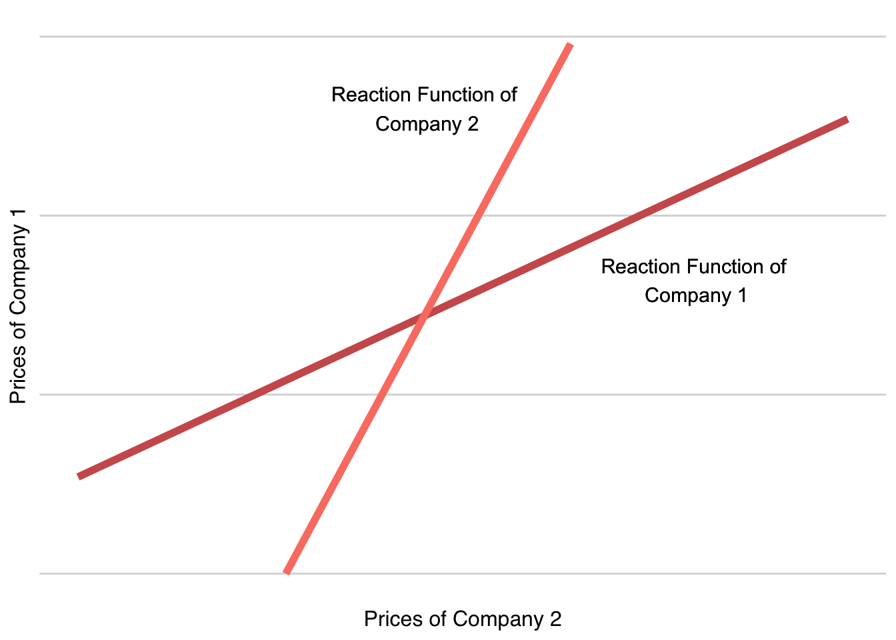

Competition is fundamentally about contending with competitors to capture and retain customers. This contest is not merely a battle for market share, but a critical determinant of a company’s overall performance and viability. The demand a business creates with its product or service defines its ability to attract customers.
At its core, competition in business is a zero-sum game in the quest for customers. Every customer won is a gain for one company and a loss for another. This dynamic shapes the demand landscape, where the success of a product or service hinges on its ability to attract and retain customers. As one company’s offering gains favor, its competitors inevitably feel the pinch, leading to shifts in market demand.
The real battleground in business competition, however, lies in profitability. Various strategies, from innovative pricing to creative marketing and beyond, are deployed to capture customer interest. The goal is not just to increase sales but to do so in a way that amplifies profits. For instance, a company that manages to distinguish its product, appealing more to customer preferences than its competitors, can boost demand. If the cost of this differentiation is outweighed by the increase in revenue, the result is a net gain in profitability.
10.1 Competition in Oligopoly
Traditional economic models paint a picture of competition as either a monopoly, where one company reigns supreme, or a perfectly competitive arena with many players and no clear leaders. For startups, however, reality is typically found somewhere in between.
Competitive Extremes
Entrepreneurs dream of monopoly but it is a pipe dream
The idea of a monopoly, where a single firm controls the market, is often touted as the holy grail for startups. Peter Thiel (2014), for instance, champions the pursuit of monopolistic status as the path to significant profitability and market and pricing control. However, true monopolies are exceedingly rare and often not a practical goal for most entrepreneurs.
Entrepreneurs in perfect competition are living a nightmare
On the other end of the spectrum, perfect competition, characterized by numerous players and uniform products, presents a challenging environment with limited rewards. In such markets, companies have little control over pricing and face intense competition, leading to razor-thin profit margins. While it’s crucial to understand the dynamics of perfect competition, as an entrepreneur, steering clear of such markets is advisable.1
Awake entrepreneurs compete in the reality of oligopoly
Most startups find themselves in oligopolies - markets dominated by a few firms engaged in a sophisticated dance of action and reaction. This market structure demands a keen understanding of strategic interplay among competitors, be it in pricing, product innovation, or marketing.
Competition in Bertrand Oligopolies
For entrepreneurs, the most relevant form of oligopoly is often Bertrand competition, which encompasses both highly differentiated markets and those with minimal differentiation. This chapter delves into Bertrand competition, offering insights and strategies for startups to navigate and thrive in these competitive waters.2
10.2 The Realities of Competing on Price
Avoid the Quicksand of Price Competition
Successful companies continuously strategize to captivate their target customers. One common approach is enhancing product value through innovation and effective branding. However, a more direct and often perilous route is through price competition—lowering prices to divert customers from competitors. This method, while immediately impactful, can trigger a chain reaction of price matching or undercutting by competitors, culminating in a harmful price war. The more they compete, the further they sink into price wars. Such wars often result in selling similar quantities but at continually decreasing prices, eroding profits for all involved.
The Inevitability of Competing on Price
Despite the evident risks of price competition, it’s crucial to acknowledge a fundamental truth: all firms, in one way or another, compete on price. The pricing decisions made by businesses significantly influence customer purchasing choices, thus determining the demand for their products. Price considerations remain paramount even when a company’s focus is on non-price factors like product features or brand allure. The challenge lies in strategically setting prices that optimize profit without igniting a price war.
Extend Strategic Focus to Pricing and Beyond
Our goal is to master the art of competing effectively while not solely relying on price. This requires a keen understanding of oligopoly markets, particularly in contexts where the temptation to engage in price battles is strongest. We delve into the concept of undifferentiated Bertrand oligopoly, where the allure and risks of pure price competition loom large, and contrast it with differentiated Bertrand oligopoly. In the latter, product differentiation plays a pivotal role, offering avenues to sidestep a battle centered only on price.
Diverse Customers Prefer Diverse Products over Lower Prices
The idea that a race to the lowest price benefits customers seems appealing, especially in markets with undifferentiated products. It suggests a scenario where everyone gets exactly what they want at the lowest possible price. However, this notion overlooks a critical aspect of consumer behavior: heterogeneity in customer preferences. Customers often seek varied products that cater specifically to their unique needs. In such a diverse marketplace, the lowest price for a one-size-fits-all product is rarely the most attractive option. This is true even in segments with limited incomes, where the demand for variety and specificity remains robust. Therefore, a market thriving on serving customer diversity often trumps one racing to the bottom in pricing, especially in meeting the nuanced needs of a varied customer base.
10.3 Undifferentiated Bertrand Oligopoly
Oligopolies, which lie between perfect competition and monopoly, present unique competitive dynamics. In undifferentiated Bertrand competition, a few key conditions prevail:
A Few, Powerful Firms: These firms can influence market equilibrium and each other’s behaviors.
Undifferentiated Products: Customers see no difference between products from different firms.
Entry Barriers: These maintain industry concentration.
Many Powerless Customers: Customers lack influence over market dynamics.
Perfect Information: Everyone knows all prices and product availabilities.
Price-Based Competition: Firms compete primarily through pricing strategies.
Unlimited Capacity: Firms can meet any market demand.
Price Wars Are Rational but Mutually Destructive
Imagine a market with just two firms (a duopoly) where products and costs are identical. When one firm sets a price, the other has three options: match it, price higher, or undercut it. The logical move is to undercut, capturing the entire market at a slightly reduced price. This, however, prompts the first firm to respond with its own price cut to regain the market, leading to a continuous undercutting cycle.
This strategic price reduction leads to a price war, with both firms lowering their prices in tandem. Equilibrium is eventually reached when prices fall to the leveo of costs. At this point, lowering prices further would mean operating at a loss, so no incentive remains for either firm to change their pricing strategy. This situation, where firms end up earning zero economic profit, represents the epitome of fierce price competition.
Economic Profit vs. Accounting Profit
Zero economic profit doesn’t imply the absence of accounting profit. It means the business is viable—it covers all expenses and compensates for the entrepreneur’s time and capital—but doesn’t generate surplus profits beyond what could be earned elsewhere with the same investment of time and resources.
The equilibrium where a firm’s best response is to set price equal to cost is competition at its worst.3 It highlights the need to avoid competing solely on prices. What can a company do in this situation to avoid price wars and zero profit?
Strategies to Avoid the Price War Trap
Gaining a Cost Advantage
One effective strategy to steer clear of price wars in undifferentiated Bertrand competition is to establish a cost advantage. Consider firms with varying costs due to different technologies. The firm with the lowest marginal cost (Firm 1) and the next lowest (Firm 2) set the stage for market dynamics.
Market Dynamics with Varied Costs: When the market price equates to the cost of the higher-cost firm, that firm can’t gain by reducing its price. However, the lower-cost firm (Firm 1) continues to have the incentive to undercut. This process drives the higher-cost firm out of the market, with the price cutting halting at the cost level of Firm 2.
Position of the Lowest-Cost Firm: Firm 1, with the lowest cost, doesn’t become a monopolist but instead dominates the market share, constrained by the cost structure of its closest competitor (Firm 2). Its pricing power is limited, capping just below the cost of Firm 2.
Exploiting Capacity Constraints
Typically, in undifferentiated Bertrand oligopolies, it’s assumed that firms can satisfy total market demand at the lowest price. However, adding capacity constraints changes this assumption and the resultant market behavior. Firms can only sell as much as they can produce, even if they offer the lowest price, altering the usual trajectory of a price war and offering some protection against it.
Demonstrative Example: Capacity Constraints in Action
Setting the Market Scene
Imagine a scenario in a market where no single firm can satisfy more than 40% of the total demand at the equilibrium price. In such a setup, a minimum of three firms is necessary to fully meet market demand. Let’s consider three firms with the following variable costs:
Firm 1’s variable unit cost:\(\mathsf{\quad c_1 = \$10}\)
Firm 2’s variable unit cost:\(\mathsf{\quad c_2 = \$20}\)
Firm 3’s variable unit cost:\(\mathsf{\quad c_3 = \$30}\)
Market Dynamics and Pricing
In this market structure, the pricing will stabilize at \(\mathsf{\$30}\), aligning with the highest variable unit cost among the firms. Here’s how the market share gets distributed: Firms 1 and 2, with their cost advantages, capture 40% of the market each and Firm 3, with the highest cost, caters to the remaining 20%.
Firm 1’s market share: 40% of the market
Firm 2’s market share: 40% of the market
Firm 3’s market share: 20% of the market
When Firm 3 attempts to expand its market share beyond this 20%, Firms 1 and 2 have the leeway to reduce their prices below \(\mathsf{\$30}\). Their lower costs enable them to do so while maintaining profitability. As a result, Firm 3, operating at the brink of its cost, can only break even and finds itself unable to compete with the lowered prices.
Impact of a New Entrant
Now, introduce a twist in the market with the entry of Firm 4, which has a marginal cost of \(\mathsf{\$25}\). This new competitive dynamic would push the market price down to \(\mathsf{\$25,}\) effectively ousting Firm 3 from the market. Firms 1 and 2, despite experiencing a dip in their profits due to the new lower market price, remain profitable. Firm 4, with its cost aligning with the new market price, manages to break even and captures the market share previously held by Firm 3.
Strategic Implications
This example highlights how capacity constraints and varying cost structures among firms can significantly influence market pricing and distribution of market shares. It illustrates the strategic complexity in an undifferentiated Bertrand oligopoly and underscores the importance of cost management and capacity considerations in competitive positioning.
Mini-mills in the Steel Industry: A Case Study in Undifferentiated Bertrand Competition
The emergence of mini-mills in steel production offers a compelling illustration of the dynamics of an undifferentiated Bertrand oligopoly, particularly in the context of heterogeneous variable costs and capacity constraints.
Innovation and Cost Advantage
Mini-mills, an innovative approach to steel production, utilize scrap metal as their primary raw material, contrasting with the traditional integrated steel mills that begin with iron ore. The mini-mills’ process, which starts with already-refined metal, grants them a significant cost advantage over integrated mills. This advantage becomes pronounced in the production of lower-end steel products, such as rebar for construction.
Market Dynamics and Price Impact
As mini-mills proliferated, they systematically undercut the integrated mills in the rebar market, leveraging their lower costs. This competitive pressure gradually forced the integrated mills to retreat from this segment. Following their exit, rebar prices experienced a notable 20% decline, equal to the cost advantage of the mini-mills. This pattern—a period of stable prices disrupted by the entry of low-cost innovations and subsequent exit of higher-cost incumbents—consistently resulted in price collapses, aligning with the cost level of the most efficient mini-mills.4
The Commodity Nature of Steel and Market Evolution
Steel, being a commodity product, exhibits minimal differentiation within each category. Initially, the presence of low-cost mini-mills prompted a shift in market pricing to the level of the highest-cost integrated mills. The mini-mills, with their limited capacity, were able to fill their production to the brim, leaving the remainder of the market demand to the integrated mills.
However, as more mini-mills entered the market, attracted by the potential profits, they brought additional capacity. This increasing capacity from low-cost producers gradually diminished the market share of the higher-cost incumbents. Once the collective capacity of the mini-mills was sufficient to meet market demand, the integrated mills found themselves redundant and exited the market. Subsequently, the price plummeted to the level of the costliest mini-mill.
Conclusion: The Bertrand Trap for Mini-mills
The mini-mills initially enjoyed attractive profits when their capacity was insufficient to meet total market demand. Yet, as their capacity expanded and their costs converged, they found themselves in a classic undifferentiated Bertrand competition scenario. With similar cost structures, the mini-mills faced intense price competition, leading to the inevitable outcome of such markets: prices equalizing to marginal costs and the erosion of extraordinary profits.
Quantitative Case: Drop-Shipping
Background
In the dynamic e-commerce landscape, drop-shipping has become a common business model. Companies partner with manufacturers, often in China, to sell products on platforms like Amazon or Shopify. The products are shipped directly from the manufacturer to the customer upon order. This model, while efficient, often leads to intense price competition, especially for undifferentiated products.
With different costs
Scenario
Imagine a drop-shipping market with four companies: QuickShip, SpeedyDelivery, FastDrop, and RapidSend. They all sell a similar, popular gadget but have different cost structures due to varying agreements with manufacturers.
Market Demand: The daily market demand for the gadget is given by \(\mathsf{Q=1600−5P}\), where \(\mathsf{Q}\) is the quantity of gadgets and \(\mathsf{P}\) is the selling price.
Cost Structures:
Company
Fixed Cost (per day)
Variable Cost (per unit)
QuickShip
\$2000
\$60
SpeedyDelivery
\$2200
\$50
FastDrop
\$2800
\$35
RapidSend
\$3000
\$25
Competitive Dynamics
In this highly competitive market, companies will undercut each other’s prices. RapidSend, with the lowest variable cost of $25, can profitably offer the gadget at lower prices than competitors. To maximize profits, RapidSend will set a price just low enough to out-compete SpeedyDelivery, the next cheapest competitor.
Optimal Pricing: RapidSend sets the price at $34, undercutting SpeedyDelivery. At this price, RapidSend becomes the sole supplier in the market.
Demand and Profit Calculation:
At a price of $34, daily demand is \(\mathsf{Q = 1600 − 5 \cdot 34 = 1430}\) units.
QuickShip’s daily profit is $0 if they have not yet entered and can avoid their fixed costs and -$2000 if they have already entered.
SpeedyDelivery’s daily profit is $0 if they have not yet entered and -$2200 if they have.
FastDrop’s daily profit is $0 if they have not yet entered and and -$2800 if they have.
With capacity constraints and different costs
Scenario
Suppose each company can only handle a maximum of 390 orders per day. Their cost structures are unchanged from above.
Competitive Dynamics
With this capacity constraint, the market dynamics change.
Market Structure: The market can accommodate up to four firms, with each firm having a maximum capacity of 390 units. Three firms will sell at their capacity of 390 with the fourth selling enough to cover the rest of demand at the equilibrium price.
Equilibrium Price: The price will adjust to a level where four firms can operate profitably in the market – at the highest-cost firm’s variable unit cost ($60).
Conclusion
This case demonstrates the competitive nature of drop-shipping in an undifferentiated Bertrand market. The key takeaway is the importance of cost management and capacity constraints in determining market dynamics and profitability. Drop-shipping companies often must navigate intense price competition, where having a cost advantage is crucial for survival and profitability.
Low Price Guarantees
So far, the methods for avoiding price competition have had more to do with variable cost and fixed cost (capacity) than with pricing. Low-price guarantees represent a pricing strategy aimed at avoiding constant price wars.
The Idea Behind Low-Price Guarantees
Low-price guarantees are promises made to customers that a firm will match or beat the prices of its competitors. While appearing as a customer-centric approach, these guarantees can actually serve as a strategic tool for the firms themselves.
Impact on Price Competition
In a typical Bertrand scenario, a small price cut by one firm can lead to it capturing the entire market. This triggers a race to the bottom, with firms continually undercutting each other. However, with a low-price guarantee in place, this dynamic changes:
Deterrent to Undercutting: If a competitor lowers its price, the firm with the guarantee can simply match it, retaining its customers. The competing firm gains no additional market share but suffers a reduction in revenue, removing the incentive to undercut prices.5
Maintaining Prices Above Cost: These guarantees can help maintain prices at a level above cost, benefiting the firms more than their customers.
Why Aren’t Low-Price Guarantees Universal?
Despite their theoretical effectiveness, low-price guarantees are not universally adopted. The reasons include:
Limited Effectiveness in Differentiated Markets: Firms engaged in differentiated competition find these guarantees less effective and necessary.
Customer Hassle Factor: The onus is often on the customer to claim the guarantee, which can be a hassle. Not all customers will go through the process, reducing the effectiveness of the guarantee.
Branding Over Deterrence: Recent studies suggest that low-price guarantees are often used more for branding and advertising than as a genuine pricing strategy.
While low-price guarantees offer some respite from relentless price competition, they are not foolproof. A more sustainable approach for entrepreneurs is to identify a niche market with unmet needs and innovate to provide differentiated solutions. Catering to a heterogeneous group of customers with unique demands can be a more effective path to profitability than relying on pricing strategies alone in an undifferentiated market.
10.4 Differentiated Bertand Oligopoly
Differentiated Bertrand competition is arguably the most prevalent form of oligopoly in real-world markets. It’s characterized by product differentiation and strategic pricing—a scenario familiar in industries like cola, desktop computers, automobiles, airlines, and ski resorts. The defining feature here, in contrast to undifferentiated Bertrand competition, is the unique characteristics of each product. To be part of this competitive landscape, the market must exhibit the following criteria:
A Few, Influential Firms: These firms have the power to shape market equilibrium and influence their competitors’ strategies.
Product Differentiation: Products are distinct in the eyes of consumers, who may prefer one over another based on these differences.
Entry Barriers: These maintain the concentration of key players in the industry.
Numerous, Individual Customers: A large customer base with limited individual market influence.
Perfect Information: All parties are well-informed about product prices and availability.
Differentiated Bertrand markets allow firms to command higher, more sustainable prices, thanks to the unique appeal of their products. For instance, consider two firms offering similar but distinct products, each enjoying its own loyal customer base. A scenario where one firm offers its product for free doesn’t automatically mean the other loses all its customers. Brand loyalty and product preferences ensure that some customers remain willing to pay a premium.
In this market, firms lose the typical price war incentives seen in undifferentiated scenarios. Unique product attributes allow firms to adjust their pricing strategies flexibly. If one firm raises its price, its competitor might also increase its price, potentially adding a premium for its distinct features. This pricing interplay continues until reaching a threshold where customers no longer perceive additional value in paying a higher price.
Differentiated Bertrand Equilibrium
In differentiated Bertrand oligopolies, products are distinct yet substitutable, catering to the diverse needs of heterogeneous customers. This scenario is typical in industries where strategic pricing and product uniqueness play pivotal roles.
Demand Curves for Differentiated Products
Here, the customer’s perception of products directly influences demand. The general demand equations for two competing firms in such a market can be expressed as:
In these equations, \(\mathsf{Q_1}\) and \(\mathsf{Q_2}\) denote the demand for Firm 1 and Firm 2, respectively, while \(\mathsf{P_1}\) and \(\mathsf{P_2}\) are their corresponding prices. The coefficients \(\mathsf{a_1}\), \(\mathsf{b_1}\), and \(\mathsf{b_{12}}\) (and their Firm 2 counterparts) represent the demand intercept, slope, and cross-price effect, illustrating how each firm’s demand is affected by both its own and its competitor’s pricing.
Maximizing Profits with Differentiation
Profit maximization for each firm involves finding the optimal price that balances revenue and costs. The profit functions are:
Where \(\mathsf{\pi_{1}}\) and \(\mathsf{\pi_{2}}\) represent the profits, incorporating both fixed (\(\mathsf{f}\)) and variable unit costs (\(\mathsf{c}\)). Substituting the demand equations into the profit functions, we get:
Each differentiated Bertrand oligopolist’s pricing decision is intertwined with its competitor’s pricing strategy. The relationship between the company’s optimal price and the competitor’s price is captured in reaction functions which map out the optimal pricing response to every possible competitor price.
Firm 1’s Reaction: Illustrated in Fig. R1, showing how its optimal price adjusts in response to Firm 2’s pricing. Firm 2’s Reaction: Similarly, Firm 2’s optimal pricing, in response to Firm 1’s strategy, is also defined by a reaction function.
Company 1’s reaction function showing how its optimal price adjusts in response to Firm 2’s pricing is illustrated in Figure 10.1. The intercept shows that if Company 2 sets price at zero, Company 1 would still set its price above zero. The slope shows that Company 1 will optimally raise its price when Company 2 raises its price. In short, this reaction function demonstrates that each firm’s optimal price is a strategic response to its competitor’s pricing, leading to a state of mutual dependency. For Company 1, the only remaining question is “what price will Company 2 choose?”
Figure 10.1: Reaction function for Company 1 – Company 1’s optimal prices as its best response to every possible price from Company 2
You might already be anticipating that Company 2, much like Company 1, has its own reaction function, dependent on the pricing decisions of Company 1. This interdependence raises an intriguing question: “What price will Company 1 choose?” Logically, we are left with a strategic stalemate with both companies waiting for their competitor act so they can respond with their best price. Fortunately, there is a simple solution to the mutually dependent pricing conundrum.
Figure 10.2 introduces the reaction function of Company 2 alongside that of Company 1, providing a comprehensive view of their interactive pricing strategies. Observing Company 2’s reaction function, we notice that if Company 1 were to set its price at zero, Company 2 would still opt for a price above zero, as indicated by its reaction function’s intercept on the x-axis. Moreover, the positive slope of Company 2’s reaction function suggests a strategic response pattern: as Company 1 increases its price, Company 2 will also elevate its price proportionally.
This addition of Company 2’s reaction function to the plot not only enriches our understanding of the market dynamics but also sets the stage for identifying the equilibrium point where both companies’ strategies converge.
rev_bounds <-tibble(x =c(0, 100)) # Create tibble containing plot range for x-axis (P)eqn1 <-" P[1] == frac(b[1] * c[1] - a[1], 2*b[1]) - frac(b[12],2*b[1]) * ~~ P[2] "ggplot(rev_bounds, aes(x)) +# Draw ggplot2 plot## geom_segment(aes(x = 0, y = 0, xend = 0, yend = 200), color = "black", linewidth=0.125) + geom_function(fun = fr1, color ="IndianRed", linewidth =2) +geom_function(fun = fr2_inv, color ="Salmon", linewidth =2) +labs(x ="Prices of Company 2",y ="Prices of Company 1") +##geom_text(x=100, y=80, label=eqn1, hjust = 1, size = 4, parse=TRUE) +geom_text(x=80, y=82, label="Reaction Function of\n Company 1", hjust = .50, size =4, parse=F) +geom_text(x=45, y=130, label="Reaction Function of\n Company 2", hjust = .50, size =4, parse=F) +# geom_text(x=80, y=50, label="(Company 1's optimal price in response\n to prices of Company 2)", hjust = .50, size = 4, parse=F) +#theme(axis.text.x =element_blank(), # Remove X axis labelsaxis.text.y =element_blank(), # Remove Y axis labelsaxis.ticks =element_blank() # Remove tick marks for both axes ) +#scale_x_continuous(labels=scales::dollar_format()) + scale_y_continuous(lim =c(-0,150), labels=scales::dollar_format()) +theme_hc()

Figure 10.2: Reaction functions for Company 1 and Company 2
Figure 10.2 not only illustrates the individual reaction functions of Companies 1 and 2 but also reveals a critical intersection point between them. This intersection signifies where each company’s optimal pricing strategy, or best response, aligns with the other’s. In seeking to optimize, both companies naturally gravitate towards setting their prices on their reaction functions. The convergence of these functions at a single point highlights the only scenario where both firms can simultaneously choose their best responses. This point of intersection defines the optimal, equilibrium prices in our differentiated Bertrand oligopoly, as depicted in Figure 10.3.
The emergence of this equilibrium, however, raises a pertinent question: How do Bertrand competitors, without any coordination, arrive at the equilibrium prices where their reaction functions intersect? While it’s conceivable that both firms could analytically deduce and simultaneously choose the exact equilibrium prices, real-world evidence suggests this is not commonly the case.
In practice, firms often reach the Bertrand equilibrium through a process of observation and reaction. Take, for instance, Company 2 setting its initial price at zero as depicted in Figure 10.3. In response, Company 1 would set its price at the intercept of its reaction function. Company 2, observing this, adjusts its price upward to align with its reaction function, as indicated by the bottom arrow in Figure 10.3. This iterative process, characterized by a series of adjustments and counter-adjustments, eventually leads the firms to converge at the equilibrium. The key is consistent observation and responsive action, ensuring that each firm continually adjusts its pricing in line with the evolving market dynamics.
Figure 10.3: Reaction functions for Company 1 and Company 2
Bertrand-Nash Equilibrium
This logic of both companies choosing their best response to their competitor is known as a Nash equilibrium.6 Since we are seeking the equilibrium prices in a differentiated Bertrand oligopoly, this equilibrium is known as a Bertrand-Nash equilibrium or the Bertrand equilibrium for short.
Quantitative Example: Coke v. Pepsi in Bertrand Competition
Coca-Cola and Pepsi, two of the most iconic soft drink brands, exemplify the dynamics of differentiated Bertrand competition. Utilizing demand and cost curves estimated from historical data,1 we can delve into their competitive strategies and profitability within the Bertrand framework.
Let’s designate Coca-Cola as Company \(\mathsf{c}\) and Pepsi as Company \(\mathsf{p}\). Their respective demand curves have been estimated as7
These demand curves suggest a scenario where a price increase by Coke (Company \(\mathsf{c}\)) relative to Pepsi (Company \(\mathsf{p}\)) would reduce Coke’s sales, but not all Coke consumers would switch to Pepsi. This reflects the brand loyalty found among consumers of differentiated products.
The estimated variable unit costs for Coke and Pepsi are:
Coke’s variable unit cost:\(\mathsf{\quad c_c = \$4.96}\)
Pepsi’s variable unit cost:\(\mathsf{\quad c_p = \$3.96}\)
Incorporating these costs into the demand functions, we derive the profit functions for each company:
Figure 10.4 illustrates these reaction functions and the Bertrand equilibrium optimal prices for Coke and Pepsi. At this equilibrium, each company selects its optimal pricing strategy in response to the other’s pricing, balancing competitive pressure with profit maximization.
Figure 10.4: Differentiated Bertrand reaction functions for Coke and Pepsi. The optimal price for Coke is $12.74 and for Pepsi is $8.12. Coke earns $242.71 in economic profit and Pepsi earns $95.08.
Now that we know the optimal prices for Coke and Pepsi, we can calculate their profits.
As we conclude our exploration of Bertrand oligopolies and their implications for entrepreneurial ventures, several critical lessons emerge. These lessons are not just theoretical musings but practical guidelines for navigating the complex landscape of market competition.
Exercise Pricing Discipline
One of the most important takeaways is the concept of pricing mutual forbearance. In the relentless quest to attract customers, the temptation to engage in aggressive price cutting can be strong. However, our analysis underscores the peril of this approach, particularly in undifferentiated markets. Instead, firms must practice restraint and avoid triggering destructive price wars that erode profitability for all players involved. Recognizing and respecting the pricing strategies of competitors can lead to a more stable and sustainable competitive environment.
The Significance of Product Differentiation
Differentiated Bertrand competition highlights the value of product differentiation and the discipline it brings to pricing strategies. Differentiation allows firms to escape the trap of competing solely on price, enabling them to command premium prices for unique product features that resonate with specific customer segments. This approach not only helps in maintaining healthy profit margins but also fosters innovation and brand loyalty.
Measure Competitiveness for Evidence-Based Decisions
Finally, the ability to compete effectively is not a matter of guesswork. It requires a rigorous measurement of expected profits and a deep understanding of one’s competitive position. In the realm of entrepreneurship, where resources are often limited and the cost of missteps high, making evidence-based decisions is crucial. By quantitatively assessing how well a venture can compete against its rivals, entrepreneurs can make informed strategic choices, from pricing to product development.
In conclusion, the journey through the nuances of Bertrand oligopolies reveals much about the strategic underpinnings of effective competition. For entrepreneurs, the lessons learned here are invaluable. They provide a framework for understanding market dynamics, a guide for strategic decision-making, and a reminder of the importance of innovation and customer focus. By applying these insights, entrepreneurs can navigate the competitive landscape with greater confidence and precision, turning challenges into opportunities for growth and success.
10.6 Workout Problems
Dorsal Packs
A group of entrepreneurs, concerned about pick-pocketing in tourist destinations, created the Dorsal travel pack. This stylish, modern backpack has zippers facing inward, toward the back of the wearer, for security. For added security, it is made of slash-resistant fabric in nondescript colors to avoid the attention that more colorful, fashion-oriented brands draw.
The team validated the problem and solution, refined the concept, and confirmed direct sales through their website. They conducted a profitability analysis with 107 potential customers, who rated the innovation, suggested improvements, stated their maximum willingness to pay, and provided travel and demographic information.
The team recognizes that not all travelers care more strongly about security than other features the bag may have. They have seen competitors in the market that focus on the versatility in of a travel pack, emphasizing pockets, packing, and compatability with airline luggage restrictions, in addition to branded logos and colors. The VersaPack travel pack is the dominant competitor in the travel pack market, primarily targeting travelers who value versatility by designing and placing pockets in convenient places, enhancing packability, and developing TSA-friendly features. While the VersaPack is less secure from pick-pocketers than the Dorsal pack, it has many features that travelers value.
How effectively can Dorsal pack expect to compete with VersaPack. What is the impact on Dorsal pack’s predicted profits when we add a competitor to the analytics?
Dorsal Pack data
The Dorsal pack team reached out to travelers who have either traveled internationally recently or are about to travel internationally. They showed the travelers both the Dorsal pack and the VersaPack and gathered data about their impressions and willingness to pay. They were able to get 97 responses from potential customers.
Demand and Revenue
The respondents were shown the Dorsal backpack and its features, emphasizing the physical design that enhances security without adding mechanical locks. They were asked
To rate how strongly they care about the security features of a travel backpack (scale 1-10);
To rate the innovation and offer suggestions to improve it (scale 1-10).
The respondents were also shown the VersaPack travel pack. They were asked
“What is the most you would be willing to pay for the Dorsal travel pack?”
“What is the most you would be willing to pay for the VersaPack travel pack?”
Finally, the respondents provided information about their travel patterns as well as demographics.
The responses are stored in a tibble named dp (Dorsal Pack).
Dorsal plans to have the pack manufactured by a contract manufacturer who charges $40 per backpack to be manufactured, packaged, and delivered to the startup’s offices. The startup is also spending $200 per month for web hosting and $5500 per month for contracted web development. Their total cost curve is linear: \(\mathsf{C = cQ + f}\) where \(\mathsf{c}\) is the variable cost per unit and \(\mathsf{f}\) is fixed cost per month.
Rescaling
To conduct profitability analytics, it’s crucial to align the scale of sample demand with the fixed costs required to serve the market. For this analysis, we will rescale the demand up to the market level. Concerning market size:
International Travelers from the U.S.: According to the U.S. National Travel and Tourism Office, approximately 93 million international trips were made by U.S. citizens in 2019. We focus on 2019 data because international travel dynamics significantly changed due to the COVID-19 pandemic, and recent recovery data is not yet fully available.
We estimate that the average international traveler makes about 1.5 trips per year, accounting for both frequent travelers and those who rarely travel abroad.
It is generally estimated that 70 to 80 percent of these trips are for leisure purposes.
Combining these factors, we assume there were approximately 43.4 million unique international travelers in 2019.
Percentage of Young Travelers Likely to Use a Backpack: While detailed data is unavailable, a conservative estimate suggests that 25% of these travelers are in the 20-39 age group, a demographic typically more active in international travel. This estimation brings our target population down to 10.85 million.
Market share in a crowded backpack market: Recognizing the diverse needs and preferences of travelers, as well as the crowded nature of the backpack market, achieving a 1-5% market share would be substantial. Opting for a midpoint estimate of 3%, we approximate the target market to be around 65,100 potential customers.
In summary, our assumption for the target market is about 565,500 potential international travelers, some of whom care more about security and others who care more about versatility.
Questions
What is the rescaling factor \(\mathsf{m}\) based on the calculation of the target population?
How many Dorsal travel packs would you expect to sell to the sample of 97 respondents if the price of a Dorsal pack is $200 and the price of a VersaPack is $150?
How many VersaPack travel packs would you expect to sell to the sample of 97 respondents if the price of a VersaPack is $200 and the price of a Dorsal travel pack is $175?
How many Dorsal travel packs would you expect to sell to the complete market if the price of a Dorsal pack is $250 and the price of a VersaPack is $200?
How many VersaPack travel packs would you expect to sell to the complete market if the price of a VersaPack is $220 and the price of a Dorsal travel pack is $150?
Using an iterating function or manual iteration, what is the differentiated Bertrand equilibrium price for a Dorsal pack? Use the rescaled market demand curve for your calculation and continue to use the market demand for the rest of the questions.
What is the differentiated Bertrand equilibrium price for a VersaPack travel pack?
How many Dorsal travel packs would you expect to sell to the complete market at the Bertrand equilibrium prices?
How many VersaPack travel packs would you expect to sell to the complete market at the Bertrand equilibrium prices?
How much profit does Dorsal pack expect to earn per year in competition with VersaPack?
How much profit does VersaPack expect to earn per year in competition with Dorsal pack?
Does Dorsal pack expect to earn more profit or less in competition with VersaPack compared to what it expected to earn under the assumption it was a monopolist?
Which market assumption is more appropriate (monopoly or Bertrand competition)?
How does Dorsal pack’s expected profit change when considering only the responses of customers who value security highly (security preference score of 7 or higher)?
Is Dorsal a stronger competitor (higher expected profit) with customers who care about more about security or with all travelers?
Christensen, Clayton M., and Michael E. Raynor. 2003. The Innovator’s Solution: Creating and Sustaining Successful Growth. Boston, Massachusetts: Harvard Business School Press.
Edlin, Aaron S. 1997. “Do Guaranteed-Low-Price Policies Guarantee High Prices, and Can Antitrust Rise to the Challenge?”Harvard Law Review, 528–75.
Gasmi, Farid, Quang Vuong, and J. J. Laffont. 1992. “Econometric Analysis of Collusive Behavior in a Soft-Drink Market.”Journal of Economics and Management Strategy 1 (2): 277–311.
Hviid, Morten, and Greg Shaffer. 1999. “Hassle Costs: The Achilles’ Heel of Price-Matching Guarantees.”Journal of Economics & Management Strategy 8 (4): 489–521.
Mañez, Juan A. 2006. “Unbeatable Value Low-Price Guarantee: Collusive Mechanism or Advertising Strategy?”Journal of Economics & Management Strategy 15 (1): 143–66.
Thiel, Peter. 2014. “Competition Is for Losers.”Wall Street Journal, September.
In an effort emphasize entrepreneurship over economic theory, we have glossed over the details of perfect competition. If you would like to understand why profits are so low in perfect competition, see the supplementary document on perfect competition.↩︎
There are many forms of oligopoly competition where firms compete on different variables such as quantity, price, timing, and product differentiation. We will not consider the other forms of oligopoly here because Bertrand oligpoly is most relevant to entrepreneurship. For a broader perspective on the types of oligopolistic competition, see the supplementary chapters on Cournot oligopoly, Stackelberg Oligopoly, and collusion.↩︎
There are cases where it is rational to set price below cost which are nightmarish pricing scenarios of economic and accounting losses. We will not cover those cases here.↩︎
Christensen and Raynor (2003) point out what appears to be a puzzle that when high cost competitors (integrated steel mills) are driven out of an industry by innovative lower-cost competitors, the price collapses. This puzzle is easily explained by the competitive dynamics of undifferentiated Bertrand competition.↩︎
For more detail on how low-price guarantees work as well as their limitations, see Edlin (1997), Hviid and Shaffer (1999), and Mañez (2006).↩︎
This equilibrium is named after the Princeton mathematician John Nash who won a Nobel prize in economics for his contributions to game theory. His journey to this discovery and eventually receiving the Nobel prize was portrayed in the film A Beautiful Mind.↩︎
Gasmi, Vuong, and Laffont (1992) used data to estimate the demand and cost curves and then analyze the Bertrand competition between the soft drink behemoths. We will reproduce their analysis here.↩︎